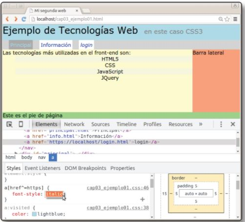
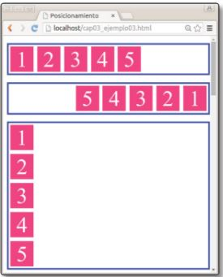
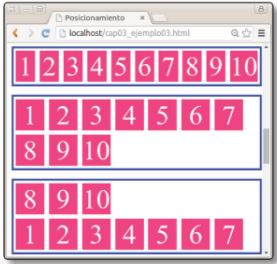
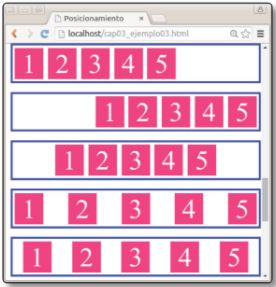
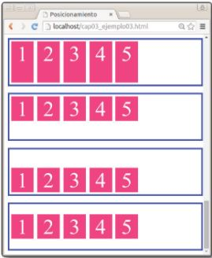
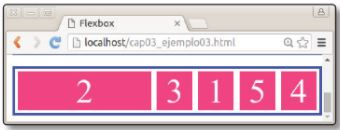
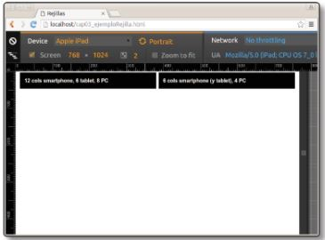
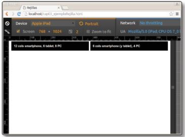

Borrador del contenido
Definición de las CCS (coding style sheets)
Las CSS (coding style sheets) son hojas de estilo en cascada, que permiten aplicar una o más reglas para dar unaapariencia a cada elemento de una página web. Se pueden aplicar diferentes hojas de estilo para una página web,
dependiendo de los dispositivos en los que se vea la misma.
Cada regla de las hojas de estilo se compone de dos partes:
misma regla, separados por coma (,).
Recio García, J. A. (2016). HTML5, CSS3 y JQuery: curso práctico. Paracuellos de Jarama, Madrid, RA-MA
Editorial.
(pp 94-96). Recuperado de https://elibro-net.bibliotecavirtual.unad.edu.co/es/ereader/unad/106494?page=94
Tipos de selectores
Se presentan los diferentes tipos de selectores que se pueden utilizar en las reglas CSS. la imagen siguiente muestrala pestaña de estilos de Google Crome que se ve con la herramienta de Inspección.

Recio García, J. A. (2016). HTML5, CSS3 y JQuery: curso práctico. Paracuellos de Jarama, Madrid, RA-MA
Editorial.
(pp 99-107). Recuperado de https://elibro-net.bibliotecavirtual.unad.edu.co/es/ereader/unad/106494?page=94
Principales listas de declaraciones
Las listas de declaraciones establecen las propiedades visuales de los elementos seleccionados. Las declaracionesCSS admiten las unidades de porcentaje (tamaño en un tanto por ciento), em (tamaño de acuerdo al tamaño de la fuente
actual o heredada), px (tamaño en pixeles), cm (centímetros), mm (milímetros), in (pulgadas), pt (puntos):
elemento, añadir una imagen como marcador
Recio García, J. A. (2016). HTML5, CSS3 y JQuery: curso práctico. Paracuellos de Jarama, Madrid, RA-MA
Editorial.
(pp 108-112). Recuperado de https://elibro-net.bibliotecavirtual.unad.edu.co/es/ereader/unad/106494?page=94
Posición de los elementos de la página web
Es muy importante la posición de cada uno de los elementos de la página y se debe tomar en consideración que la páginadebe adaptarse a diferentes tipos de dispositivos como tabletas, PC o teléfonos inteligentes. Para organizar estos
elementos se puede utilizar el modelo de posicionamiento flexible o Flexbox y el modelo de rejilla (CSS Grid), estos
pueden combinarse.
Recio García, J. A. (2016). HTML5, CSS3 y JQuery: curso práctico. Paracuellos de Jarama, Madrid, RA-MA
Editorial.
(p 113). Recuperado de https://elibro-net.bibliotecavirtual.unad.edu.co/es/ereader/unad/106494?page=94
Modelo flexible o Flebox
Este modelo permite hacer un diseño que se adapte a cualquier dispositivo, organizando los elementos de la páginadependiendo del cambio de dimensión y orientación de la misma. Para que se ajusten los cambios de dispositivo fácilmente
se define un contenedor flex (flex container) y dentro de éste elementos flex contenidos (flex item). También se define
un eje principal llamado main axis y un eje secundario llamado cross axis.
Algunas propiedades de este modelo se muestran en las imágenes siguientes, estas son propiedad flex-direction, propiedad
flex-wrap, propiedad justify-content, propiedad align-items respectivamente:
  
 
fila invertida (row-reverse), columna (column) o columna invertida (column-reverse).
Recio García, J. A. (2016). HTML5, CSS3 y JQuery: curso práctico. Paracuellos de Jarama, Madrid, RA-MA
Editorial.
(pp 118-127). Recuperado de https://elibro-net.bibliotecavirtual.unad.edu.co/es/ereader/unad/106494?page=94
Modelo de rejilla
Este modelo divide la pantalla en cuadrículas y se selecciona la cantidad de celdas que ocupará cada elemento de lapágina dependiendo del tipo de dispositivo. Este modelo ha sido popularizado por la librería Bootstrap, creada por
los desarrolladores de Twitter. Para hacer la disposición de celdas a utilizar se usan clases, las cuales indican el
número de columnas a utilizar cuando el navegador tenga un tamaño específico.
En las imágenes siguientes se pueden observar cuadrículas en tamaño xs (extra small) para la mayoría de teléfonos
inteligentes, cuadrícula en tamaño sm (small) y cuadrícula en tamaño md (medium) para la mayoría de los navegadores
de escritorio; respectivamente:
 

Las Media Queries, son las que permiten cambiar las propiedades CSS en este modelo dependiendo de las características
del tipo de dispositivo, a través de las reglas de las hojas de estilo. Son la base del diseño adaptativo.